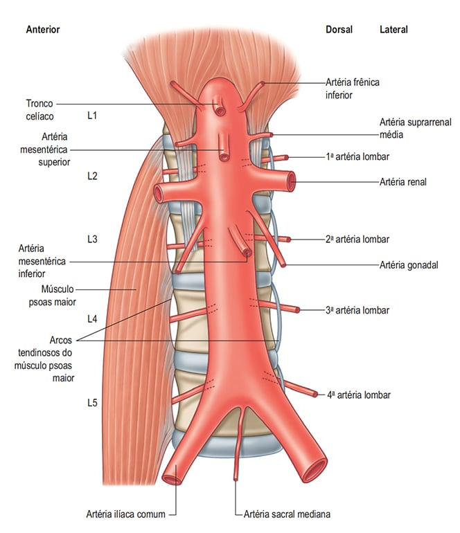
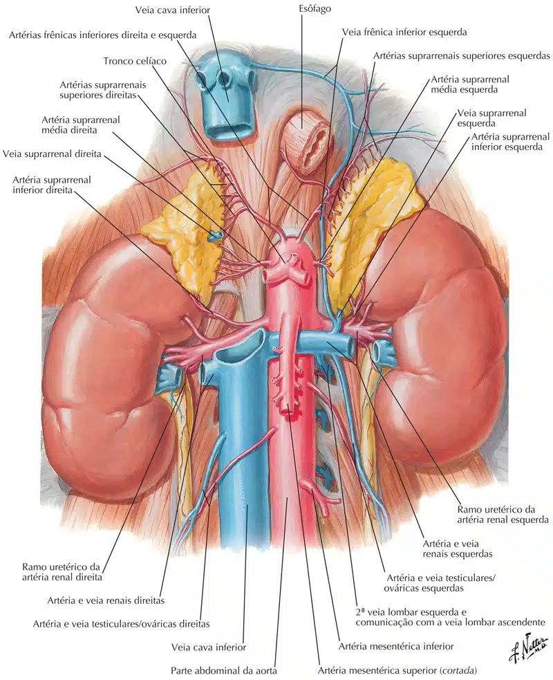
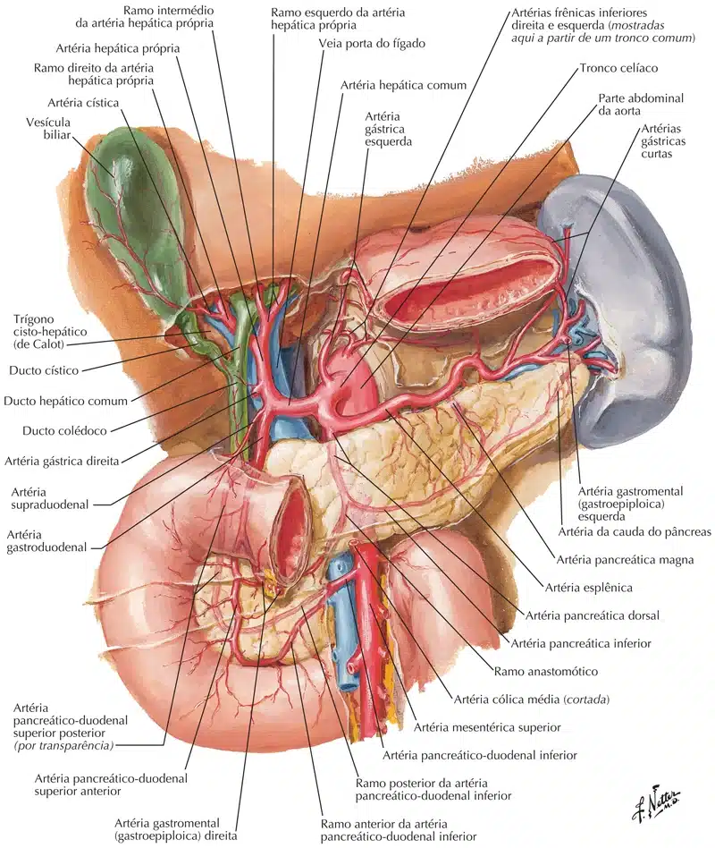
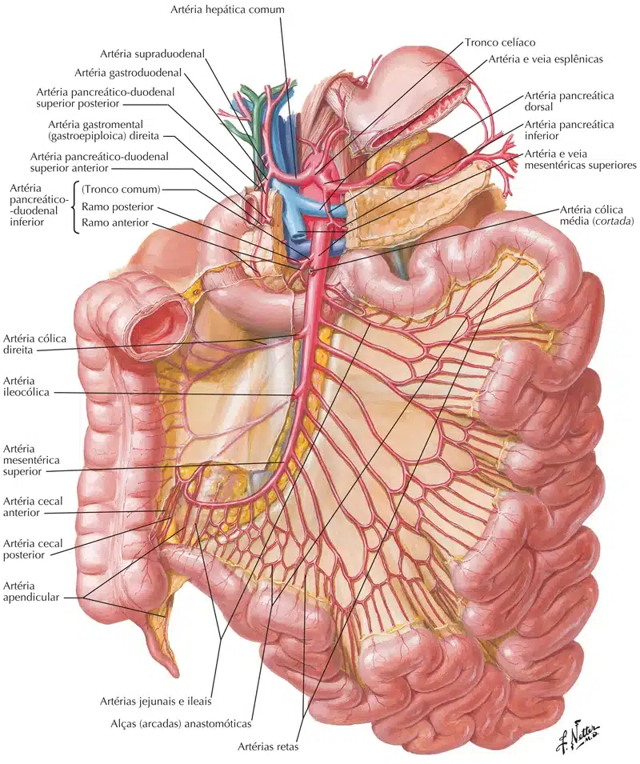
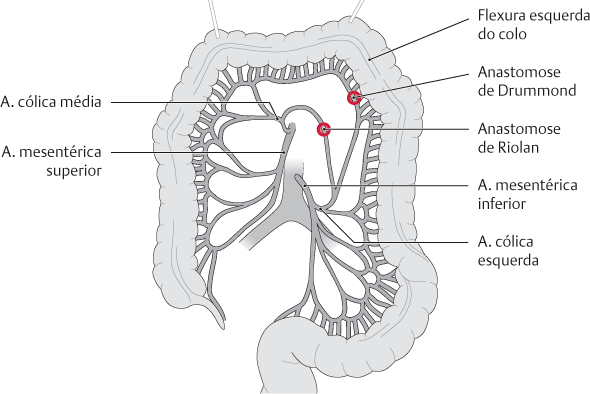
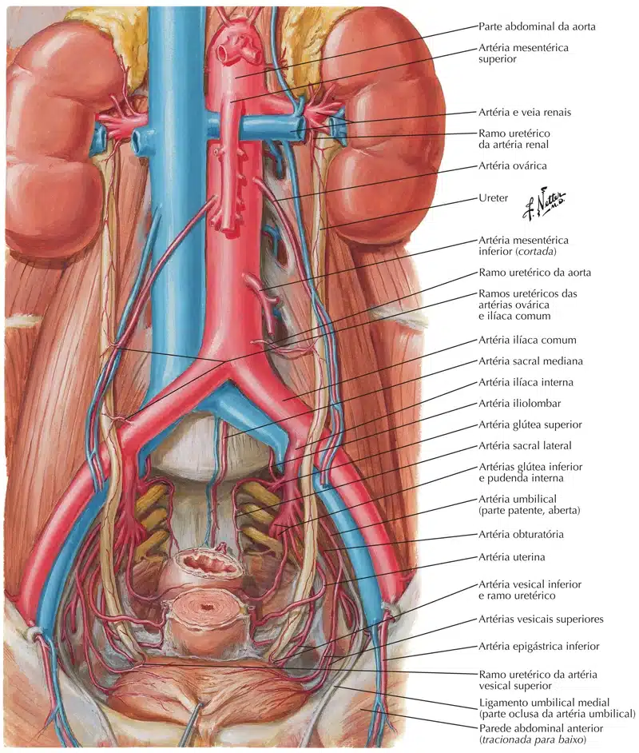
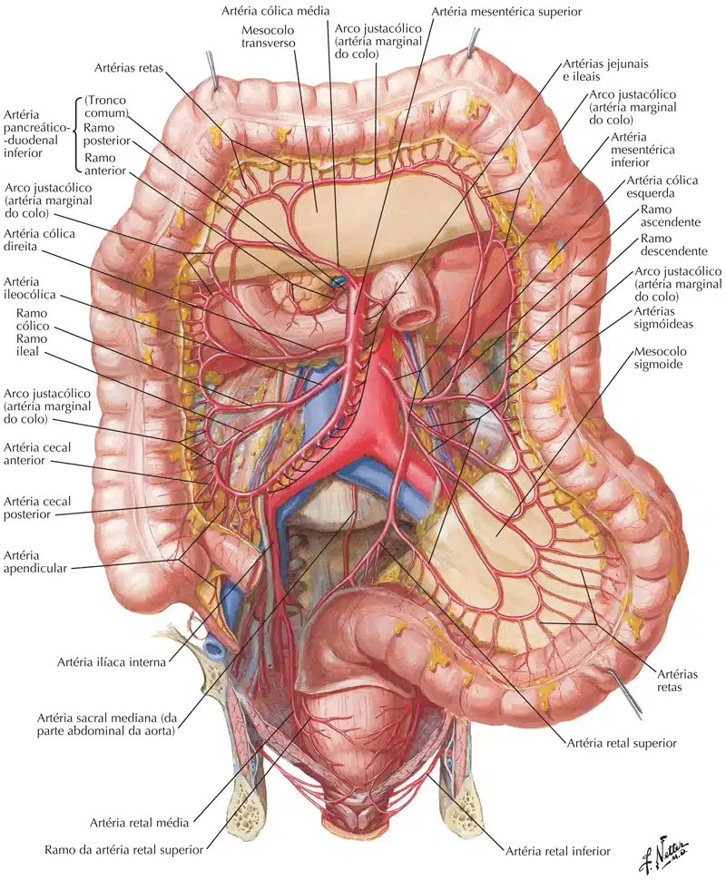
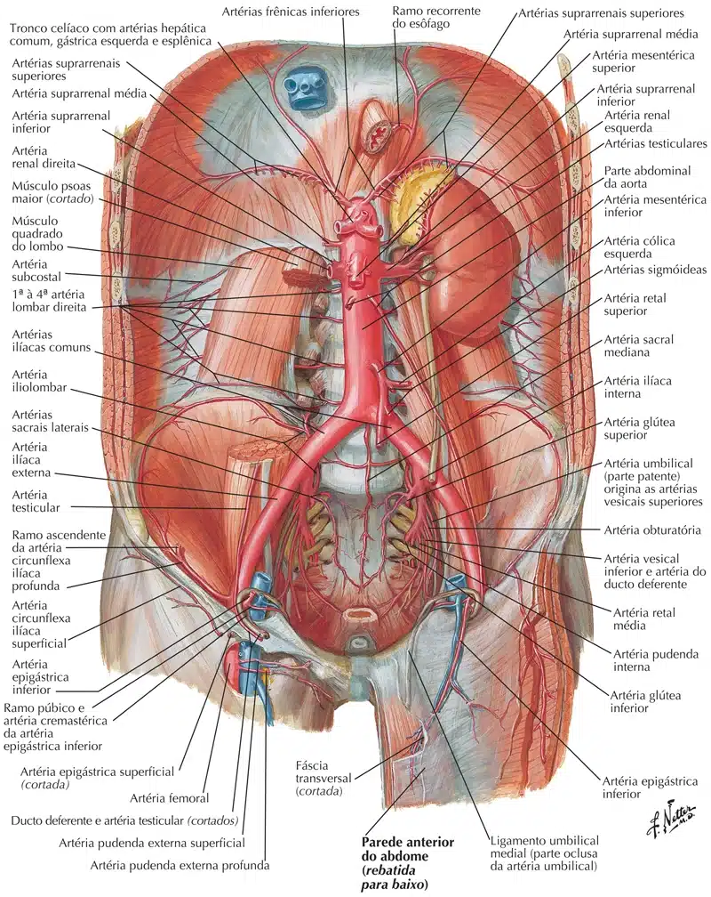

O suprimento arterial do abdome é todo proveniente da a. aorta, que torna-se aorta abdominal após passar pelo hiato aórtico do m. diafragma ao nível de T12, e termina dividindo-se nas artérias ilíacas comuns ao nível de L4.
Por ordem decrescente:

É a primeira ramificação da aorta abdominal, surgindo de sua parede anterior (mas é considerado posterior) ao nível de T2.
É um par de artérias com sentido ascendente, composto pela artéria frênica inferior esquerda, que passa atrás do esôfago, e artéria frênica inferior direita, que corre atrás da veia cava inferior.
Elas são responsáveis por irrigar a face inferior do m. diafragma, mas também emitem ramos para o fígado (ramo direito), esôfago e baço (ramo esquerdo).
Além disso, cada uma emite uma artéria supra-renal superior.

Sai da parede anterior da aorta abdominal e irriga os órgãos:
Esôfago abdominal; estômago; duodeno (da parte superior à papila maior do duodeno); fígado; vesícula biliar; pâncreas e baço.
Surge ao nível de T12 e divide-se imediatamente em artérias gástrica esquerda, esplênica e hepática comum.
A artéria gástrica esquerda é o menor ramo, ela sobe em direção à junção cardioesofágica emite ramos esofágicos e depois segue a curvatura menor do estômago, onde irriga a superfície do órgão e anastomosa-se com a artéria gástrica direita.
A artéria esplênica é o maior ramo e segue o trajeto da margem superior do pâncreas, o qual irriga através de numerosos ramos.
Ela segue, emite artérias gástricas menores que irrigam o fundo do estômago, e a artéria gastromental esquerda, que passa pela curvatura maior do estômago, irrigando a superfície do órgão, e anastomosa-se com a artéria gastromental direita.
A artéria esplênica, por fim, divide-se em vários ramos que entram no hilo esplênico, irrigando o baço.
A artéria hepática comum vai para a direita e emite a artéria gastroduodenal, que desce posteriormente à parte superior do duodeno e logo divide-se na artéria gastromental direita, que segue a curvatura maior do estômago até se anastomosar com a artéria gastromental esquerda, e a artéria pancreáticoduodenal superior, que divide-se em artéria pancreáticoduodenal superior anterior e posterior e desce para irrigar a cabeça do pâncreas e duodeno.
Esses ramos depois se anastomosam com as artérias pancreáticoduodenal inferior anterior e posterior provenientes da artéria mesentérica superior.
A artéria hepática comum segue e emite ainda a artéria gástrica direita, que passa em torno da curvatura menor do estômago e anastomosa-se com a artéria gástrica esquerda.
Após essa emissão, a artéria hepática comum vira artéria hepática própria.
Ela sobe em direção ao fígado, passando à esquerda do ducto colédoco e anterior à veia porta, e divide-se em artéria hepática direita e esquerda próximo ao hilo hepático.
A artéria hepática direita envia a artéria cística para a vesícula biliar.

Sai da parede anterior da aorta abdominal e vasculariza os órgãos formados pelo intestino médio, ou seja, duodeno (a partir da parte inferior à papila maior do duodeno), jejuno, íleo, ceco, apêndice vermiforme, cólon ascendente e 2/3 iniciais do cólon transverso.
Surge abaixo do tronco celíaco, ao nível de L1, e é atravessada anteriormente pela veia esplênica e pelo colo do pâncreas.
Ela imite imediatamente a artéria pancreáticoduodenal inferior, que divide-se em anterior e posterior, irriga o duodeno e a cabeça e o processo uncinado do pâncreas, por fim indo anastomosar-se com as artérias pancreáticoduodenais superior anterior e posterior do tronco celíaco.
Em seguida, a artéria mesentérica superior envia numerosos ramos para a esquerda; são as artérias jejunais e artérias ileais.
Para o lado direito, ela emite três ramos; o primeiro é a artéria cólica média, ela penetra no mesocólon transverso e divide-se em ramos direito e esquerdo; o segundo é a artéria cólica direita, responsável pela vascularização do cólon ascendente, e envia ramos ascendente e descendente; e o terceiro é a artéria íleocólica (íleocecocólica), que passa à direita da fossa ilíaca direita e emite ramos que vão irrigar o íleo terminal, ceco, apêndice e cólon ascendente.

Anastomoses entre artérias do intestino grosso
Arcada de Riolan: anastomose direta entre as Aa. cólicas média e esquerda, normalmente tem origem próximo às saídas das Aa. cólicas média e esquerda a partir da A. mesentérica superior ou inferior.
Artéria marginal de Drummond: próximo à margem do intestino grosso, unindo as artérias (próximo ao tubo intestinal) de todo o contorno do intestino grosso.

Surgem ao nível de L1, mais ou menos na mesma altura que a artéria mesentérica superior, porém na parede lateral da aorta abdominal.
É responsável por irrigar as suprarenais juntamente com as artérias supra-renais superiores (ramo das artérias frênicas inferiores) e inferiores (ramos das artérias renais).
Um par de artérias renais surge logo abaixo das artérias supra-renais médias e próximo à artéria mesentérica superior, entre as vértebras L1 e L2, na parede lateral da aorta abdominal.
A artéria renal esquerda geralmente é emitida um pouco mais superior, e a artéria renal direita é mais comprida e passa posterior à veia cava inferior.
Cada uma emite uma artéria supra-renal inferior, antes de se subdividir em 5 artérias terminais no hilo renal.
Par de artérias que surge da parede anterior da aorta abdominal, inferior às artérias renais, ao nível de L2, e tem como responsabilidade irrigar as gônadas.
Dessa forma, nos homens elas passam a se chamar artérias testiculares e cada uma irriga o testículo correspondente, e nas mulheres, artérias ováricas (exemplo na figura), responsáveis por vascularizar o ovário correspondente.
Seu trajeto acompanha o músculo psoas maior, cruzando anteriormente o ureter e a porção inferior das artérias ilíacas externas, e passando por trás dos ramos das mesentéricas.

Sai da parede anterior da aorta abdominal e vasculariza os órgãos formados pelo intestino posterior, ou seja, 1/3 final do colo transverso, colo descendente, colo sigmóide, reto e parte superior do canal anal.
Emerge ao nível de L3, fazendo sua trajetória para a esquerda.
Seu primeiro ramo ascende como a artéria cólica esquerda e que, por sua vez, emite dois ramos; um ascendente, que passa anterior ao rim e vai irrigar o 1/3 final do colo transverso e parte superior do colo ascendente; e um descendente, responsável pela irrigação da parte inferior do colo descendente.
A artéria mesentérica inferior envia então de duas a quatro artérias sigmóideas para a esquerda e para baixo, responsáveis por irrigar a parte inferior do colo descendente e o colo sigmóide.
O ramo terminal da mesentérica superior é a artéria retal superior, que cruza os vasos ilíacos comuns esquerdos, entra na cavidade pélvica e divide-se em ramos que vão irrigar o reto.
Artéria ímpar, surge ao nível de L4 da parede posterior da aorta abdominal pouco antes desta se bifurcar.
Sua trajetória é inferior, inicialmente sobre as vértebras lombares, e depois sobre o sacro e cóccix.

São geralmente quatro pares que surgem da parede posterior da aorta abdominal ao nível de L1 a L4, e irriga a parede abdominal posterior e a coluna vertebral.
